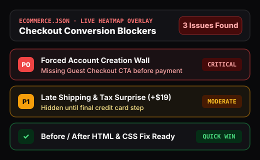

Nearly 70% of online shopping carts are abandoned due to preventable usability friction — forced registration walls, hidden shipping fees, and confusing form validation. synthux audits product pages, carts, and checkout flows in minutes.

From first product impression to order confirmation, synthux evaluates both visual hierarchy (via screenshot vision) and DOM ergonomics.
Flags forced account creation walls, late shipping/tax surprises, and open promo-code boxes that send shoppers off-site hunting for discount codes.
Audits image gallery resolution, stock availability indicators, size guide proximity, and Add-to-Cart contrast across desktop and mobile viewports.
Checks active filter chips, sort persistence, verified review authenticity cues, and return policy visibility near high-commitment purchase buttons.
Evaluate your store through the eyes of hesitant first-time buyers, repeat shoppers, and CRO specialists.
Teams responsible for increasing Add-to-Cart rates, checkout completion, and average order value across Shopify, Magento, custom headless storefronts, and marketplaces.
Digital agencies producing rapid, evidence-backed UX audit deliverables for prospective retail clients and redesign kickoffs.
Simulates a shopper arriving from a search or social ad who does not know your brand and looks immediately for shipping costs, delivery dates, and return guarantees.
Configure a custom persona representing a distracted shopper looking for fast filtering, express checkout options, and friction-free guest payment.
Yes. synthux inspects the live rendered DOM and viewport screenshot directly in Chrome, so it works on any storefront including React/Next.js headless commerce, Shopify, Magento, and staging URLs.
Yes. In addition to the built-in E-Commerce Rule Pack, you can download the JSON template in the Scan tab and import your own custom e-commerce heuristics.
100% offline, on-device UX and cognitive-load auditing via Ollama for classified C4ISR systems, defense software, and core banking intranets.
Audit fee and exchange-rate transparency, irreversible transaction guardrails, numeric input formatting, and session security indicators.
Evaluate high-density data tables, empty-state onboarding, bulk action ergonomics, keyboard shortcuts, and destructive action guardrails.
Combine deterministic axe-core WCAG 2.2 AA checks with AI screen-reader and keyboard-only persona evaluation and code fixes.
Simulate end-to-end user journeys across connected pages through First-Time, Power User, Accessibility, and custom domain personas.